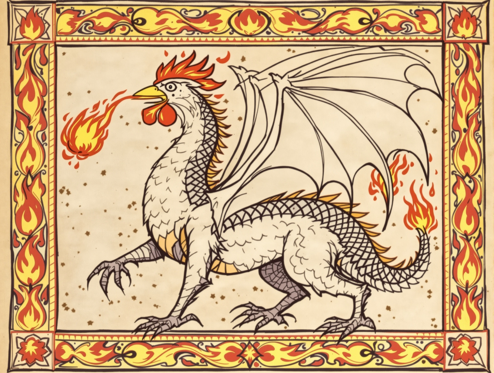
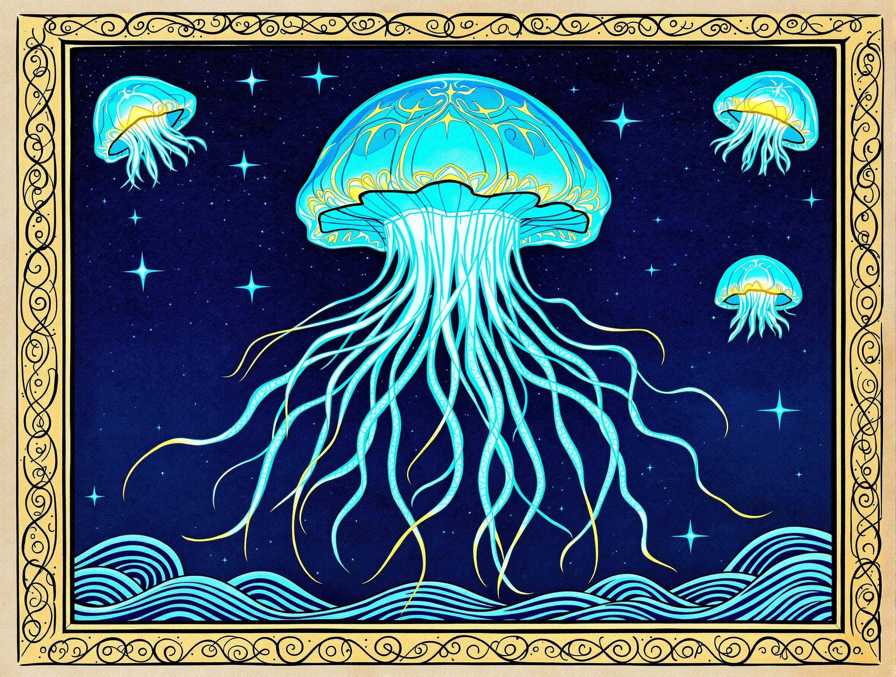

Personagens

Herói X
Portador do Pincel da Aura e do Escudo-Godê, o protagonista que devolve as cores ao reino.

Rei X
Monarca sábio que confia ao herói a missão de restaurar o Reino Esmaecido.

Mago X
Conselheiro corrompido que roubou as cores do mundo e distorce a realidade.

Galinacio (Boss Vermelho)
Frango mágico caótico do Salão Rubi — representa a fúria e o caos.

Dragão de Pedra Esmeralda (Boss Verde)
Guardião dos Jardins Esmeralda, símbolo da vida e regeneração.

Água-Viva (Boss Azul)
Guardião da Biblioteca Turquesa — representa a reflexão e paciência.